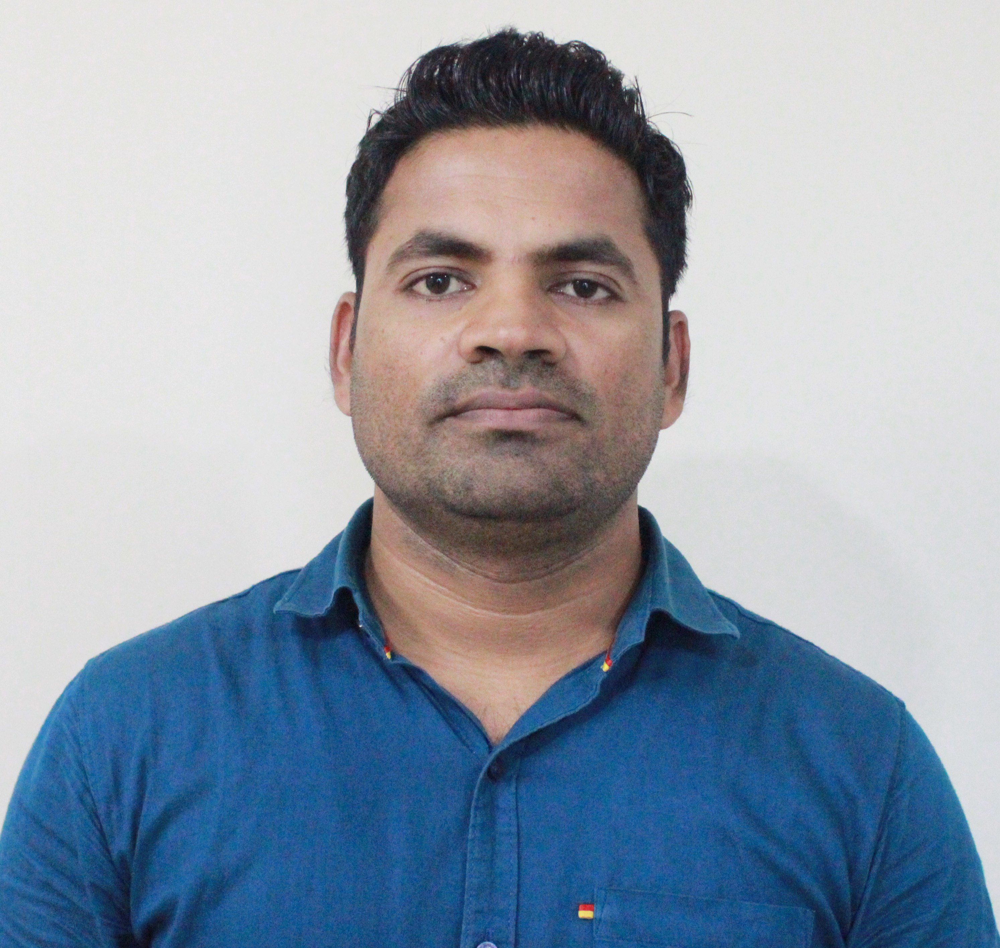

Data Engineering • AI • ML • Software Programmer • CS Researcher
Research Scholar pursuing M.Sc. Computer Science at Phillipps University Marburg, Germany. Passionate about Scalable Distributed Systems, Data Integration, Data Profiling, Retrieval Augmented Generation (RAG), Data Pre-processing and Analysis, AI/ML, Deep Learning, Neural Network, Network Security, Knowledge Graphs...

ABOUT
I have always been fascinated by how the human brain learns and adapts, but discovering that machines could emulate this remarkable capability through neural networks transformed my curiosity into passion. This curiosity has continuously drawn me toward data engineering, inspiring my interest in algorithms, efficient data processing intelligent systems.
I am deeply passionate about building intelligent systems that combine machine learning, scalable data processing, and real world problem solving. My research interests span Machine Learning, Retrieval Augmented Generation (RAG) Systems, Explainable AI, Knowledge Graphs, Data Integration, Distributed Systems, Neural Networks, and Network Security.
I have hands on experience working with technologies and frameworks across Mobility Testing (GERAN/UTRAN), AI, data engineering, and full stack development, including Python, Elasticsearch, Neo4j, Apache Spark, Akka, LangChain, React, and modern LLM pipelines. I am particularly interested in designing scalable systems that integrate machine intelligence with structured knowledge representation.
Beyond technical development, I am continuously driven by curiosity, research, and the desire to understand how intelligent systems can learn, adapt, and assist humans in meaningful ways. I enjoy exploring how large scale AI systems can efficiently retrieve, process, and reason over complex information while remaining scalable, interpretable, and reliable.
EDUCATION
Philipps University Marburg, Germany
Research focused on Data Engineering, Data Integration, Scalable Systems, Network Security, Artificial Intelligence, Machine Learning, and Neural Networks.
Lovely Professional University, India
Specialized in Software Programming, System Architecture & Design, Computer Optimization, Data Mining & Multi Core Architectures.
Pokhara University, Nepal
Major focus on Algorithm Design & Analysis, Application Development, Networking, Linux System Administration, Database Systems, and Simulation Systems.
WORK
Philipps University Marburg, Germany
Contributing to research and academic activities within the Multimodal Modelling & Learning Group, Databases Group, and Big Data Analysis Group.
View ExperiencePhilipps University Marburg, Germany
Designed and conducted tutorial sessions for international students, providing practical guidance on Python programming, LaTeX for scientific writing, Git & GitHub for collaborative development, and AI tools for academic research workflows.
View ExperienceChitwan College of Technology, Nepal
Delivered undergraduate level computer science courses, guided students through practical and theoretical concepts, and contributed to academic mentoring and project supervision activities
View ExperienceCrystal Light IT Pvt. Ltd., Bharatpur, Nepal
Contributed to the development, testing, and maintenance of Java based applications while supporting debugging, implementation, and end user assistance activities.
View ExperienceTech Mahindra Limited, Noida, India
Worked on telecom network validation and mobile device testing for US network operators - AT&T, Verizon, contributing to defect analysis, troubleshooting, and execution of test scenarios in simulated network environments.
View ExperiencePROJECTS
Automated extraction and curation of scientific knowledge using Neo4j-based knowledge graphs.
Retrieval Augmented Generation pipeline using Elasticsearch and multilingual embeddings.
Designed a distributed data profiling system to compute Inclusion Dependencies (INDs) across large scale datasets using the Akka actor framework..
Designed and trained Convolutional Neural Network (CNN) models for image classification and feature extraction tasks using deep learning techniques.
Parallel DBSCAN on Spark is a distributed spatial data mining project focused on improving the scalability and efficiency of the DBSCAN clustering algorithm using Apache Spark.
Designed a deep learning based multi-label emotion classification system for detecting multiple emotional states from text snippets using neural network architectures and NLP workflows.
Designed a price predictor model that estimates the price of automobile using real world vehicle listing datasets. The system predicted prices based on specifications, fuel information...
SKILLS
Python, Java, C, C#
Spark, Akka, Sedona
LLMs, RAG, NLP, Deep Learning, XAI, PyTorch, Neural Network
SQL, PostgreSQL, Neo4j, Redis, Mongodb
Plotly, Matplotlib, Seaborn
Git, GitHub, Docker, LaTeX
RESEARCH PAPERS
Proposed a scalable and memory efficient approach for incremental IND discovery in distributed systems using the Akka actor model which has rarely been explored.
Open PDF →Proposed a scalable and memory efficient approach for incremental IND discovery in distributed systems using the Akka actor model which has rarely been explored.
Open PDF →RAG application designed to retrieve relevant historical speech transcripts and generate context aware responses using Large Language Models..
Open PDF →Focuses on detecting five core emotions - joy, sadness, fear, anger, and surprise, by treating each emotion as an independent binary classification task.
Open PDF →Honours
Lovely Professional University, India
Received the University Academic Honour award for standing First in order of merit in Master of Computer Applications Program in the class of 2016.
Pokhara University, Nepal
Received the Dean’s List Award in recognition of an outstanding meritorious achievement in Bachelor of Computer Application.
CONTACT
Feel free to reach out.
Open to collaborations, research projects, and AI engineering opportunities.